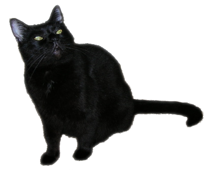

Boris MUD
Boris MUD source
Boris MUD client
Developer Documentation & API documentation
See Also
MCP 2.1
- MUD Client Protocol Specification
MCP
- MUD Client Protocol (another spec)
MXP
- MUD eXtension Protocol
MSP
- MUD Sound Protocol
MSSP
- MUD Server Status Protocol
Intermud Protocols
- Info on many Intermud protocols.
Intermud-3
- Intermud protocol (MudOS LP driver)
IMC2(InterMud Communication 2)
- specification fo connecting through IMC2.
InterMUD
- wikipedia article
wxMUD
- a cross-platform MUD client.
MudWalker
- A simple client for OSX.
Cantrip
- A MUD client for Mac OS X
The Mud Connector
- Mud and RPG game index, mudlist and reviews.
Top Mud Sites
- MUD and RPG Rankings
A Small MUD
- A C++ code base
NakedMud
- A C code base with excellent docs (fork of SocketMUD)
SocketMUD
- A C framework for writing your own MUD.
The Grendal Project
- A Windows / Linux MUD Server (Pascal/Delphi)

Copyright 2009-2019 Jon Mayo